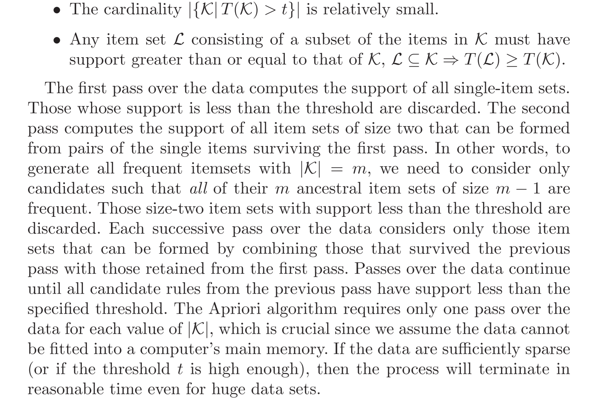
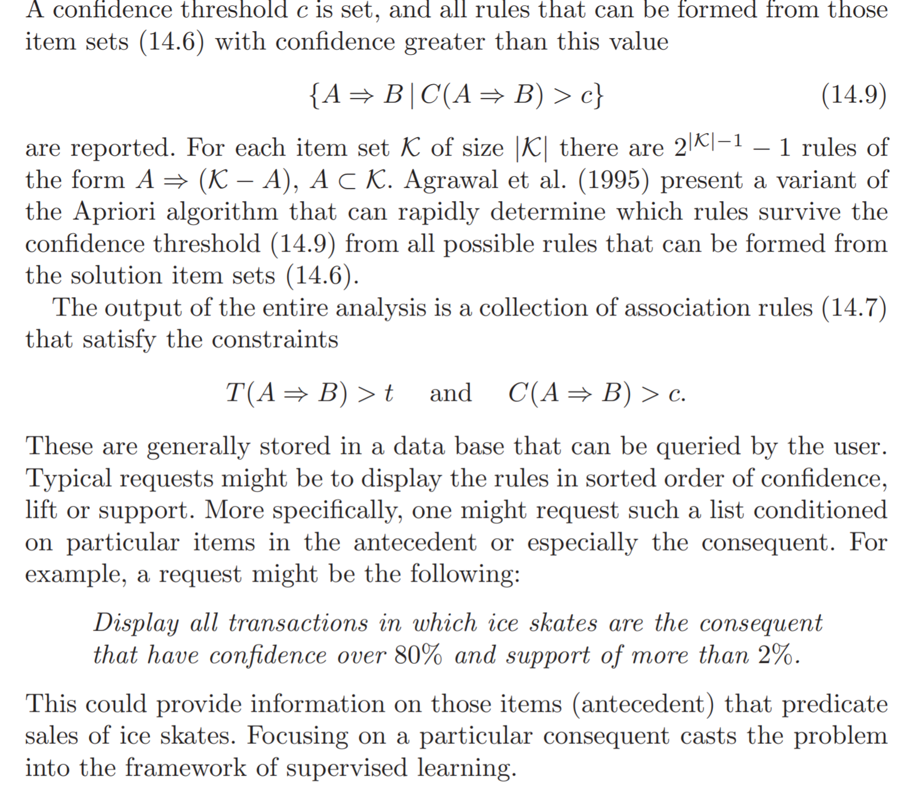
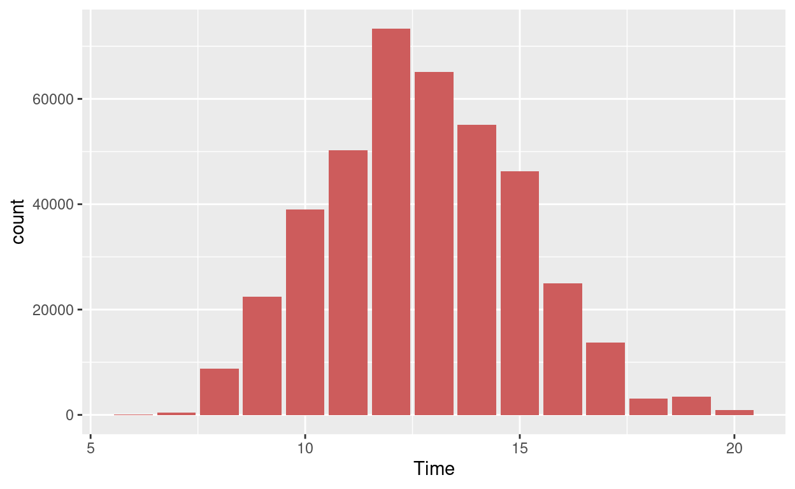
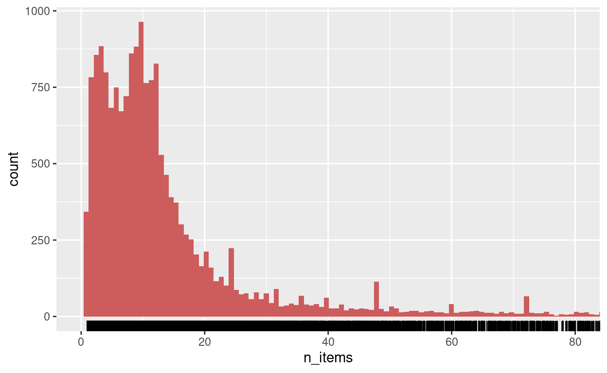
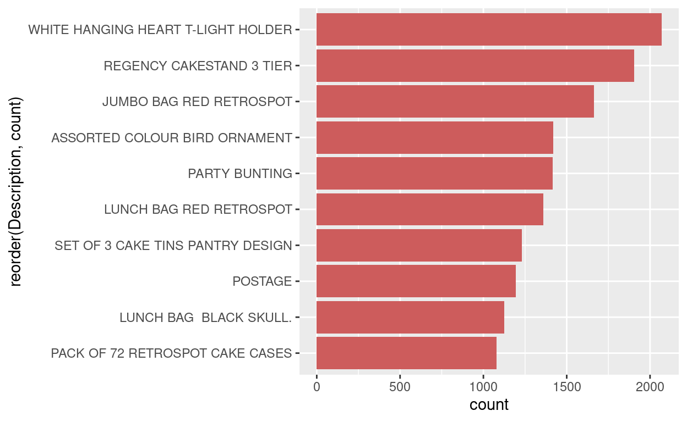
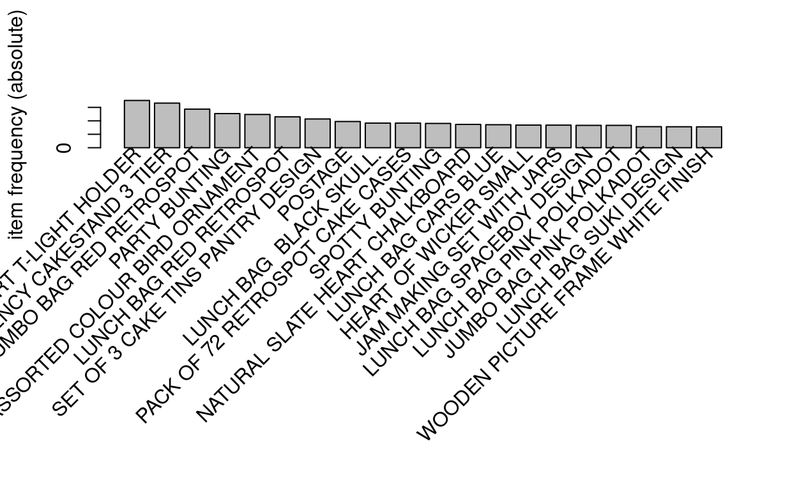
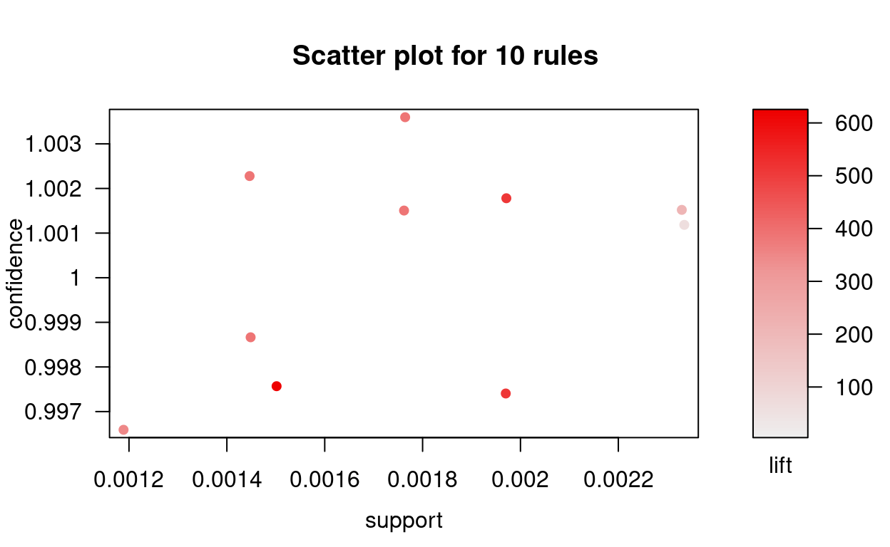
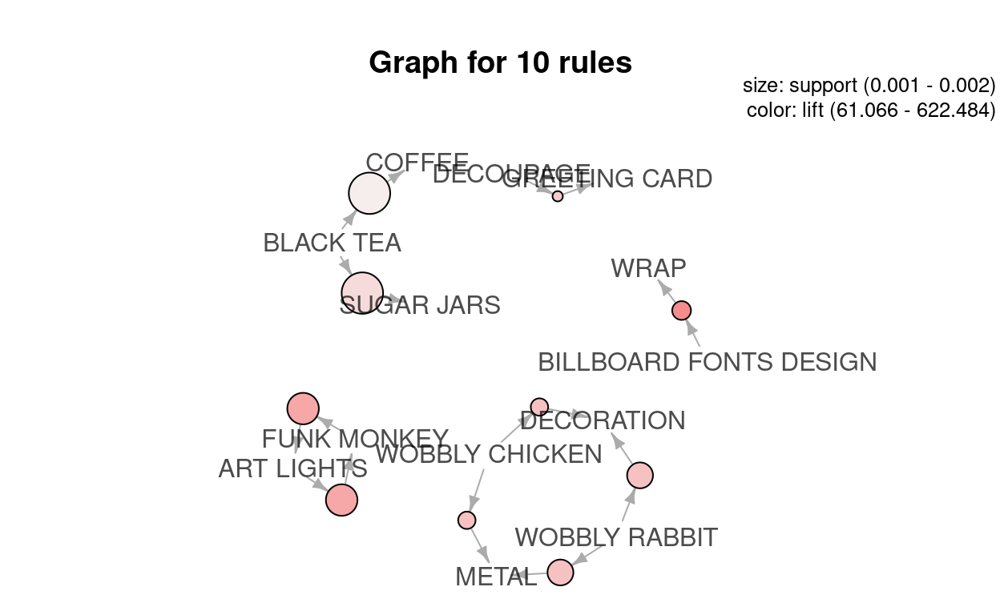

Introduction
Unsupervised learning - aka “learning without a teacher.” is about learning the structure of the explanatory variables \(X^{T} = (X_1, \dots , X_p)\). That is we seek to learn the structure of the distribution \(P_X(x)\).
When \(p\) is low dimension, then one approach is to use non-parametric density estimation to empirically characterize \(\hat{P}(x)\). However this fails when \(p\) is large due to curse of dimensionality.
How can we gain insight into \(P(x)\) from the data \((x_1, \dots, x_n)\) when \(p\) is larger. That is the problem addressed by unsupervised learning.
The biggest difference between supervised and unsupervised is that there is no obvious criterion for a “successful” characterization of the distribution. The loss function and out of sample performance plays that role in supervised learning - and hence the name supervised.
In the context of unsupervised learning, there is no such direct measure of success. It is difficult to ascertain the validity of inferences drawn from the output of most unsupervised learning algorithms. One must resort to heuristic arguments not only for motivating the algorithms, as is often the case in supervised learning as well, but also for judgments as to the quality of the results. This uncomfortable situation has led to heavy proliferation of proposed methods, since effectiveness is a matter of opinion and cannot be verified directly.
Association Rules
. Association rules attempt to construct simple descriptions (conjunctive rules) that describe regions of high density in the special case of very high dimensional binary-valued data.
It is also naturally applicable to categorical variables, e.g, data with many categorical and binary features. Observe that with a continuous variable \(X_i\), you can define splits of the variable to make it categorical, e.g., bin the variable.
Let \(\mathcal{S}_i\) be the support of the \(i^{th}\) variable, and \(s_i \subset \mathcal{S}_{i}\) be a subset. The problem is to find subsets \(s_1, \dots ,s_p\) such that \[P\left[\bigcap_{j} (X_j \in s_j) \right]\] is relatively large.
The intersection \(\bigcap_{j} (X_j \in s_j)\) is called a conjunctive rule. Notice that when \(s_{j} = \mathcal{S}_{j}\), the variable \(X_j\) does not appear in the conjunctive rule.
Market Basket Analysis
Market Basket Analysis specializes the problem to where \(s_j = \mathcal{S}_j\) or \(s_j = v_{0j}\), e.g., the whole support or a single value.
This can be simplified further by converting all discrete valued variables into binary variables. Let \[K = \sum_j|\mathcal{S}_j|\] be all possible values for variables in the data, and \(Z_k\) for \(k = 1,\dots, K\) be the corresponding indicator variables associated to an underlying variable and value.
The association rule problem can now be stated as one of finding the subset \(\mathcal{K} \subset K\) that makes
\[Pr\left[\prod_{k \in \mathcal{K}} Z_{k} = 1\right]\] sufficiently large.
The set \(\mathcal{K}\) is called the item set
The number of variables \(Z_k\) in the item set is called the size - note it cannot be bigger than \(p\)
The “support” or “prevalence” \(T(\mathcal{K})\) of item set \(\mathcal{K}\) is given by \[\frac{1}{N}\sum_{i}\left[\prod_{k \in \mathcal{K}} z_{ik}\right]\]
An observation \(i\) for which \(\prod_{k \in \mathcal{K}} z_{ik} = 1\) is said to contain the item set \(\mathcal{K}\).
The problem is one of finding all item sets \(\mathcal{K}_l\) such that \(T(\mathcal{K}) > t\) for a lower bound \(t\).
The Apriori Algorithm

Association Rules
Each high support item set \(\mathcal{K}\) returned by the algorithm can be transformed into a set of association rules.
Partition the \(Z_k\) for \(k \in \mathcal{K}\) into sets \(A\) and \(B\) such that \(A \cup B = \mathcal{K}\). Then the rule is \[A \implies B\]
\(A\) is the antecedent and \(B\) is the consequent.
An association rule has some defining properties:
- The support \(T(A \implies B)\) of the rule is the support of \(\mathcal{K}\)
- The confidence \(C(A \implies B)\) of the rule is \[C(A \implies B) = \frac{T(A \implies B)}{T(B)}\] which is an estimate of \(P(B \mid A)\).
- The expected confidence of \(A \implies B\) is \(T(B)\) which is an estimate of \(P(B)\).
- The lift of the rule is defined as confidence divided by expected confidence \[L(A \implies B) = \frac{C(A \implies B)}{T(B)}\]
This is an estimate of the association measure \[\frac{P(A \mbox{ and } B)}{P(A)P(B)}\]
Example

The algorithm for finding association rules is similar to apriori.

There are some important limitations which generalized association rules can solve.

Empirical Example
Market Basket Analysis is one of the key techniques used by the large retailers that uncovers associations between items by looking for combinations of items that occur together frequently in transactions. In other words, it allows the retailers to identify relationships between the items that people buy.
Association Rules is widely used to analyze retail basket or transaction data, is intended to identify strong rules discovered in transaction data using some measures of interestingness, based on the concept of strong rules.
- Assume there are 100 customers
- 10 out of them bought milk, 8 bought butter and 6 bought both of them.
- bought milk => bought butter
- Support = P(Milk & Butter) = 6/100 = 0.06
- confidence = support/P(Butter) = 0.06/0.08 = 0.75
- lift = confidence/P(Milk) = 0.75/0.10 = 7.5
Note: this example is extremely small. In practice, a rule needs a support of several hundred transactions before it can be considered statistically significant, and datasets often contain thousands or millions of transactions.
The dataset we are using today comes from UCI Machine Learning repository. The dataset is called “Online Retail” and can be found here. It contains all the transactions occurring between 01/12/2010 and 09/12/2011 for a UK-based and registered online retail.
Load the packages
Data preprocessing and exploring
url <- 'http://archive.ics.uci.edu/ml/machine-learning-databases/00352/Online%20Retail.xlsx'
retail <- rio::import(file = url)
retail <- retail[complete.cases(retail), ]
retail <- retail %>% mutate(Description = as.factor(Description))
retail <- retail %>% mutate(Country = as.factor(Country))
retail$Date <- as.Date(retail$InvoiceDate)
retail$Time <- format(retail$InvoiceDate,"%H:%M:%S")
retail$InvoiceNo <- as.numeric(as.character(retail$InvoiceNo))
glimpse(retail)
Rows: 406,829
Columns: 10
$ InvoiceNo <dbl> 536365, 536365, 536365, 536365, 536365, 536365, …
$ StockCode <chr> "85123A", "71053", "84406B", "84029G", "84029E",…
$ Description <fct> "WHITE HANGING HEART T-LIGHT HOLDER", "WHITE MET…
$ Quantity <dbl> 6, 6, 8, 6, 6, 2, 6, 6, 6, 32, 6, 6, 8, 6, 6, 3,…
$ InvoiceDate <dttm> 2010-12-01 08:26:00, 2010-12-01 08:26:00, 2010-…
$ UnitPrice <dbl> 2.55, 3.39, 2.75, 3.39, 3.39, 7.65, 4.25, 1.85, …
$ CustomerID <dbl> 17850, 17850, 17850, 17850, 17850, 17850, 17850,…
$ Country <fct> United Kingdom, United Kingdom, United Kingdom, …
$ Date <date> 2010-12-01, 2010-12-01, 2010-12-01, 2010-12-01,…
$ Time <chr> "08:26:00", "08:26:00", "08:26:00", "08:26:00", …str(retail)
'data.frame': 406829 obs. of 10 variables:
$ InvoiceNo : num 536365 536365 536365 536365 536365 ...
$ StockCode : chr "85123A" "71053" "84406B" "84029G" ...
$ Description: Factor w/ 3885 levels "10 COLOUR SPACEBOY PEN",..: 3706 3714 850 1803 2766 2966 1433 1551 1548 208 ...
$ Quantity : num 6 6 8 6 6 2 6 6 6 32 ...
$ InvoiceDate: POSIXct, format: "2010-12-01 08:26:00" ...
$ UnitPrice : num 2.55 3.39 2.75 3.39 3.39 7.65 4.25 1.85 1.85 1.69 ...
$ CustomerID : num 17850 17850 17850 17850 17850 ...
$ Country : Factor w/ 37 levels "Australia","Austria",..: 35 35 35 35 35 35 35 35 35 35 ...
$ Date : Date, format: "2010-12-01" ...
$ Time : chr "08:26:00" "08:26:00" "08:26:00" "08:26:00" ...After preprocessing, the dataset includes 406,829 records and 10 fields: InvoiceNo, StockCode, Description, Quantity, InvoiceDate, UnitPrice, CustomerID, Country, Date, Time.
What time do people often purchase online?
In order to find the answer to this question, we need to extract “hour” from the time column.
retail$Time <- as.factor(retail$Time)
a <- hms(as.character(retail$Time))
retail$Time = hour(a)
retail %>%
ggplot(aes(x=Time)) +
geom_histogram(stat="count",fill="indianred")

There is a clear effect of hour of day on order volume. Most orders happened between 11:00-15:00.
How many items each customer buy?
People mostly purchase less than 10 items (less than 10 items in each invoice). Those negative numbers should be returns.
detach("package:plyr", unload=TRUE)
retail %>%
group_by(InvoiceNo) %>%
summarize(n_items = mean(Quantity)) %>%
ggplot(aes(x=n_items))+
geom_histogram(fill="indianred", bins = 100000) +
geom_rug()+
coord_cartesian(xlim=c(0,80))

Top 10 best sellers
tmp <- retail %>%
group_by(StockCode, Description) %>%
summarize(count = n()) %>%
arrange(desc(count))
tmp <- head(tmp, n=10)
tmp
# A tibble: 10 x 3
# Groups: StockCode [10]
StockCode Description count
<chr> <fct> <int>
1 85123A WHITE HANGING HEART T-LIGHT HOLDER 2070
2 22423 REGENCY CAKESTAND 3 TIER 1905
3 85099B JUMBO BAG RED RETROSPOT 1662
4 84879 ASSORTED COLOUR BIRD ORNAMENT 1418
5 47566 PARTY BUNTING 1416
6 20725 LUNCH BAG RED RETROSPOT 1358
7 22720 SET OF 3 CAKE TINS PANTRY DESIGN 1232
8 POST POSTAGE 1196
9 20727 LUNCH BAG BLACK SKULL. 1126
10 21212 PACK OF 72 RETROSPOT CAKE CASES 1080tmp %>%
ggplot(aes(x=reorder(Description,count), y=count))+
geom_bar(stat="identity",fill="indian red")+
coord_flip()

Association rules for online retailer
Before using any rule mining algorithm, we need to transform data from the data frame format into transactions such that we have all the items bought together in one row. For example, this is the format we need:
The function ddply() accepts a data frame, splits it into pieces based on one or more factors, computes on the pieces, then returns the results as a data frame. We use “,” to separate different items.
We only need item transactions, so, remove customerID and Date columns.
Write the data from to a csv file and check whether our transaction format is correct.
write.csv(itemList,"market_basket.csv", quote = FALSE, row.names = TRUE)
Perfect! Now we have our transaction dataset shows the matrix of items being bought together. We don’t actually see how often they are bought together, we don’t see rules either. But we are going to find out.
Let’s have a closer look how many transaction we have and what they are.
print('Description of the transactions')
[1] "Description of the transactions"tr <- read.transactions('market_basket.csv', format = 'basket', sep=',')
tr
transactions in sparse format with
19297 transactions (rows) and
27165 items (columns)summary(tr)
transactions as itemMatrix in sparse format with
19297 rows (elements/itemsets/transactions) and
27165 columns (items) and a density of 0.0006701659
most frequent items:
WHITE HANGING HEART T-LIGHT HOLDER REGENCY CAKESTAND 3 TIER
1758 1660
JUMBO BAG RED RETROSPOT PARTY BUNTING
1434 1271
ASSORTED COLOUR BIRD ORNAMENT (Other)
1237 343943
element (itemset/transaction) length distribution:
sizes
1 2 3 4 5 6 7 8 9 10 11 12 13 14
1 2263 1189 851 768 725 662 618 597 582 554 572 506 487
15 16 17 18 19 20 21 22 23 24 25 26 27 28
508 504 503 449 413 477 420 383 304 313 270 237 253 223
29 30 31 32 33 34 35 36 37 38 39 40 41 42
204 222 216 171 147 138 147 130 111 116 89 104 96 92
43 44 45 46 47 48 49 50 51 52 53 54 55 56
85 94 61 67 73 67 64 52 49 59 50 41 53 50
57 58 59 60 61 62 63 64 65 66 67 68 69 70
35 24 40 35 29 27 23 21 21 17 27 31 24 16
71 72 73 74 75 76 77 78 79 80 81 82 83 84
24 18 19 18 13 14 17 14 7 9 18 17 11 10
85 86 87 88 89 90 91 92 93 94 95 96 97 98
8 13 10 14 6 7 9 6 7 8 5 4 5 5
99 100 101 102 103 104 105 106 107 108 109 110 111 112
3 3 3 4 5 5 2 3 3 7 4 6 3 4
113 114 115 116 117 118 119 120 121 122 123 124 126 127
1 2 2 1 3 4 3 1 2 1 3 2 4 1
128 132 133 134 135 140 141 142 143 144 146 147 148 150
1 1 1 3 1 1 1 1 2 1 1 3 1 1
151 155 158 162 167 169 172 178 179 181 199 200 203 205
1 2 2 1 1 1 2 1 1 1 1 1 1 1
206 210 230 237 250 251 287 322 402 421
1 1 1 1 1 1 1 1 1 1
Min. 1st Qu. Median Mean 3rd Qu. Max.
1.00 5.00 13.00 18.21 24.00 421.00
includes extended item information - examples:
labels
1 1
2 1 HANGER
3 10We see 19,296 transactions, this is the number of rows as well, and 7,881 items, remember items are the product descriptions in our original dataset. Transaction here is the collections or subsets of these 7,881 items.
The summary gives us some useful information:
- density: The percentage of non-empty cells in the sparse matrix. In another word, the total number of items that purchased divided by the total number of possible items in that matrix. We can calculate how many items were purchased using density like so:
19296 X 7881 X 0.0022
The most frequent items should be same with our results in Figure 3.
For the sizes of the transactions, 2247 transactions for just 1 items, 1147 transactions for 2 items, all the way up to the biggest transaction: 1 transaction for 420 items. This indicates that most customers buy small number of items on each purchase.
The data distribution is right skewed.
Let’s have a look item freqnency plot, this should be in align with Figure 3.
itemFrequencyPlot(tr, topN=20, type='absolute')

Create some rules
We use the Apriori algorithm in arules library to mine frequent itemsets and association rules. The algorithm employs level-wise search for frequent itemsets.
We pass supp=0.001 and conf=0.8 to return all the rules have a support of at least 0.1% and confidence of at least 80%.
We sort the rules by decreasing confidence.
Have a look the summary of the rules.
Apriori
Parameter specification:
confidence minval smax arem aval originalSupport maxtime support
0.8 0.1 1 none FALSE TRUE 5 0.001
minlen maxlen target ext
1 10 rules TRUE
Algorithmic control:
filter tree heap memopt load sort verbose
0.1 TRUE TRUE FALSE TRUE 2 TRUE
Absolute minimum support count: 19
set item appearances ...[0 item(s)] done [0.00s].
set transactions ...[27165 item(s), 19297 transaction(s)] done [0.13s].
sorting and recoding items ... [2407 item(s)] done [0.01s].
creating transaction tree ... done [0.01s].
checking subsets of size 1 2 3 4 5 6 7 8 9 10 done [0.27s].
writing ... [87110 rule(s)] done [0.03s].
creating S4 object ... done [0.03s].set of 87110 rules
rule length distribution (lhs + rhs):sizes
2 3 4 5 6 7 8 9 10
105 3133 9732 26228 29873 14020 3218 680 121
Min. 1st Qu. Median Mean 3rd Qu. Max.
2.000 5.000 6.000 5.627 6.000 10.000
summary of quality measures:
support confidence coverage
Min. :0.001036 Min. :0.8000 Min. :0.001036
1st Qu.:0.001088 1st Qu.:0.8333 1st Qu.:0.001244
Median :0.001192 Median :0.8750 Median :0.001399
Mean :0.001383 Mean :0.8834 Mean :0.001572
3rd Qu.:0.001503 3rd Qu.:0.9231 3rd Qu.:0.001658
Max. :0.018086 Max. :1.0000 Max. :0.021765
lift count
Min. : 8.781 Min. : 20.00
1st Qu.: 19.305 1st Qu.: 21.00
Median : 24.786 Median : 23.00
Mean : 50.921 Mean : 26.69
3rd Qu.: 43.662 3rd Qu.: 29.00
Max. :622.484 Max. :349.00
mining info:
data ntransactions support confidence
tr 19297 0.001 0.8- The number of rules: 89,697.
- The distribution of rules by length: Most rules are 6 items long.
- The summary of quality measures: ranges of support, confidence, and lift.
- The information on the data mining: total data mined, and minimum parameters we set earlier.
We have 89,697 rules, I don’t want to print them all, let’s inspect top 10.
inspect(rules[1:10])
lhs rhs support
[1] {WOBBLY CHICKEN} => {DECORATION} 0.001451003
[2] {WOBBLY CHICKEN} => {METAL} 0.001451003
[3] {DECOUPAGE} => {GREETING CARD} 0.001191895
[4] {BILLBOARD FONTS DESIGN} => {WRAP} 0.001502824
[5] {WOBBLY RABBIT} => {DECORATION} 0.001761932
[6] {WOBBLY RABBIT} => {METAL} 0.001761932
[7] {BLACK TEA} => {SUGAR JARS} 0.002331969
[8] {BLACK TEA} => {COFFEE} 0.002331969
[9] {ART LIGHTS} => {FUNK MONKEY} 0.001969218
[10] {FUNK MONKEY} => {ART LIGHTS} 0.001969218
confidence coverage lift count
[1] 1 0.001451003 385.94000 28
[2] 1 0.001451003 385.94000 28
[3] 1 0.001191895 344.58929 23
[4] 1 0.001502824 622.48387 29
[5] 1 0.001761932 385.94000 34
[6] 1 0.001761932 385.94000 34
[7] 1 0.002331969 212.05495 45
[8] 1 0.002331969 61.06646 45
[9] 1 0.001969218 507.81579 38
[10] 1 0.001969218 507.81579 38 100% customers who bought “WOBBLY CHICKEN” end up bought “DECORATION” as well.
100% customers who bought “BLACK TEA” end up bought “SUGAR JAR” as well.
And plot these top 10 rules.
topRules <- rules[1:10]
plot(topRules)

plot(topRules, method="graph")
